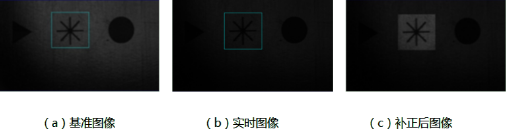
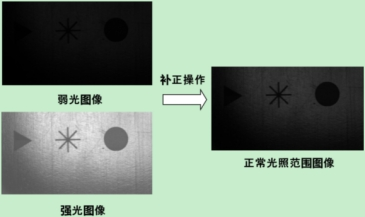

照明补正工具的主要任务是根据基准图像的亮度均值（基准值）调整实时图像，以减轻光照变化（变弱或变强）对图像的影响。

| 分类 | 参数名称 | 参数描述 |
|---|---|---|
| 属性窗口 | 基准值获取方法 | 基准值获取的方法有使用基准图像和直接指定。 |
| 基准值 | 只有在基准值获取方法为“直接指定”时，才显示该属性。范围0-255，设置的数值越大，补正之后的图像越亮。 | |
| ROI类型设置 | 基准图像ROI和照明补正ROI等两种类型设置。 | |
| 基准图像ROI | 基准图像ROI主要有四种：全图、矩形、仿射矩形和多边形。 | |
| 基准图像矩形ROI | 基准图像ROI采用矩形ROI，主要有X、Y、W和H，即左上角左边和矩形的长和宽。 | |
| 基准图像仿射矩形ROI | 基准图像ROI采用仿射矩形ROI，主要有Center（X/Y）、Size（SizeX/SizeY）、Rotation（旋转角度）和Skew（切变角度）。 | |
| 基准图像多边形ROI | VerticesNum（顶点个数）和Vertices（顶点）。 | |
| 照明补正ROI | 当ROI类型选择照明补正ROI的时候。主要有四种：全图、矩形、仿射矩形和多边形。 | |
| 照明补正矩形ROI | 照明补正ROI采用矩形ROI，主要有X、Y、W和H，即左上角左边和矩形的长和宽。 | |
| 照明补正仿射矩形ROI | 照明补正ROI采用仿射矩形ROI，主要有Center（X/Y）、Size（SizeX/SizeY）、Rotation（旋转角度）和Skew（切变角度）。 | |
| 照明补正多边形ROI | VerticesNum（顶点个数）和Vertices（顶点）。 | |
| 开启并行运算 | 是否开启并行运算，选择是时，算法将开启OpenMp并行计算方式，可以提升计算速度，但可能出现耗时不稳定的情况，选择否时，算法将关闭OpenMp并行计算。 | |
| 线程数百分比 | 设置并行运算的线程数百分比，有效范围为 (0, 0.75]，对应表示(0%, 75%]百分比范围。 | |
| 图像窗口 | 输入图像 | 需要照明补正的图像。 |
| ROI选取GUI | 用于设置输入图像需要照明补正的区域，或者设置选区里面的基准图像作为基准图像。 | |
| 数据链 | 输入图像 | 需要照明补正的图像。 |
| 基准图像 | 照明补正的基准图像。 | |
| 高级界面 | 无 | 无 |
| 分类 | 参数名称 | 参数描述 |
|---|---|---|
| 监视窗口 | 当前基准值 | 照明补正的基准值。 |
| 输出图像 | 经过照明补正的结果图像。 | |
| 执行结果 | 工具执行结果。 | |
| 执行时间 | 工具执行时间。 | |
| 图像窗口 | 输出图像 | 经过照明补正的结果图像。 |
| 执行结果 | 显示工具执行结果，执行成功显示“OK”，执行失败显示“NG”，同监视窗口的执行结果参数。 | |
| 数据链 | 输出图像 | 经过照明补正的结果图像。 |
照明补正工具实质是将弱光或强光下的图像补正至一个正常光照范围的图像，具体实现方法为对当前图像乘以一个补正系数，补正系数由基准图像的均值除以当前图像的均值获得（图像的灰度均值反映了图像亮度的整体情况。图像较亮，则灰度均值较大，图像较暗，则灰度均值较小）。

参见“\Samples\照明补正工具.gvp”。